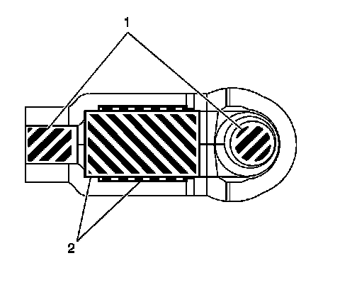
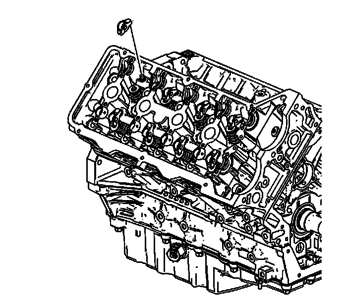

109. Valve Rocker Arm Installation - Right Side
Valve Rocker Arm Installation - Right Side

1. Apply a liberal amount of lubricant GM P/N 12345001 or equivalent to the roller (2), pivot pocket and valve slot areas (1) of the camshaft followers.

Important: The follower must be positioned squarely on the valve tip so that the full width of the roller will completely contact the camshaft lobe. If the followers are being reused you must put them back in their original location.
2. Place the camshaft followers in position on the valve tip and SHLA. The rounded head of the follower goes on the SHLA while the flat end goes on the valve tip.